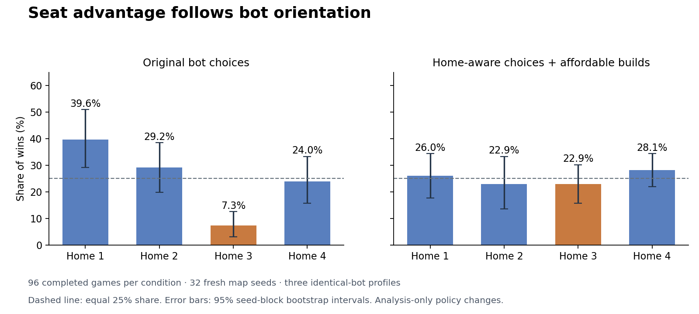

Follow-up to the Galactic Reach 16.21 balance study · Source commit 30ac7a94133b8d493c4856f95999eda255405dc8
The evidence identifies bot orientation as a major cause. The first-Shipyard tie always selects global East; equal-distance pathfinding also uses a global directional order. Those choices interact with fixed home resource orientations and launch positions. Swapping identities and starting decks does not remove the weak home. Making the opening Shipyard and pathfinding home-relative substantially changes the seat distribution.
Eight combinations of three AI interventions were run on 32 fresh map seeds, with all three homogeneous bot profiles. Each row has 96 completed games. Every row shares the same map/deck seed set and normal starting actor. All variants retain the same legal-move safeguard used in the initial study.
| Bot intervention | Home 1 wins | Home 2 wins | Home 3 wins | Home 4 wins |
|---|---|---|---|---|
| Affordable-build preference | 56.2% | 17.7% | 9.4% | 16.7% |
| Original bot choices | 39.6% | 29.2% | 7.3% | 24.0% |
| Home-relative pathfinding | 31.2% | 21.9% | 10.4% | 36.5% |
| Inward first Shipyard | 22.9% | 31.2% | 21.9% | 24.0% |
| Inward Shipyard + affordable builds | 37.5% | 21.9% | 15.6% | 25.0% |
| Relative paths + affordable builds | 45.8% | 21.9% | 14.6% | 17.7% |
| Inward Shipyard + relative paths | 19.8% | 34.4% | 26.0% | 19.8% |
| All three bot changes | 26.0% | 22.9% | 22.9% | 28.1% |
For the previously weak home 3, inward launch plus home-relative paths changes win share by +18.8 percentage points against the matched baseline; its paired 95% seed-block bootstrap interval is +8.3 to +29.2 points. Interactions matter: the effects are not additive, and individual fixes can move the advantage to another home.

The initial screen used 16 map seeds and three bot profiles. Including the baseline and three ownership rotations gives 192 matched games. Physical-home win counts were [70, 46, 26, 50]; player-identity win counts were [59, 33, 53, 47]. Player identity 3 does not remain the weak identity when assigned elsewhere, while physical home 3 remains the weakest home.
Rotating the shuffled starter decks between identities leaves home 3 with 18 wins out of 144. Giving everyone the same initial starter key order leaves it with 6 wins out of 48. Thus starting-deck allocation does not explain away the pattern. The separate earlier 384-game first-actor control also showed that simply starting first was not the explanation.
These interventions establish causes of the measured bot seat effect. They do not establish perfect human balance or prove that every remaining positional difference has been removed. Human players can already choose an inward Shipyard; the original simulation bots systematically ignore that option. The randomized inner-world layouts are held fixed within every comparison.
The targeted correction is to evaluate opening launch placement and resolve route/goal ties relative to the player's home, then validate the repaired policy across strategies and human play. A live gameplay change has not been made in this diagnostic task.
node seat-study.cjs --seeds 16 --suite screen --output seat-screen.jsonl node seat-study.cjs --seeds 16 --suite followup --output seat-followup.jsonl node seat-study.cjs --seeds 32 --offset 1000 --suite factorial --output seat-factorial.jsonl python3 seat-analyze.py python3 seat-report.py
Full statistics and intervals · Setup controls · Validated policy screen · Fresh-seed confirmation · Mechanical findings · Mechanical fixtures · Initial balance study